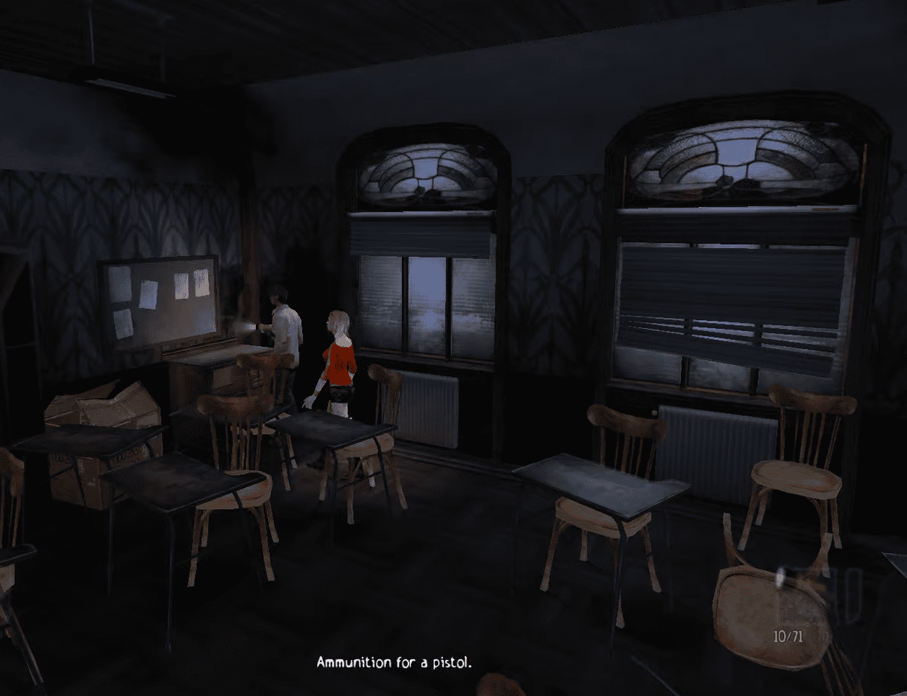
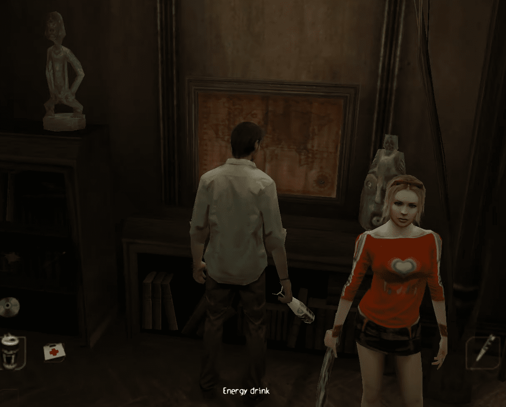
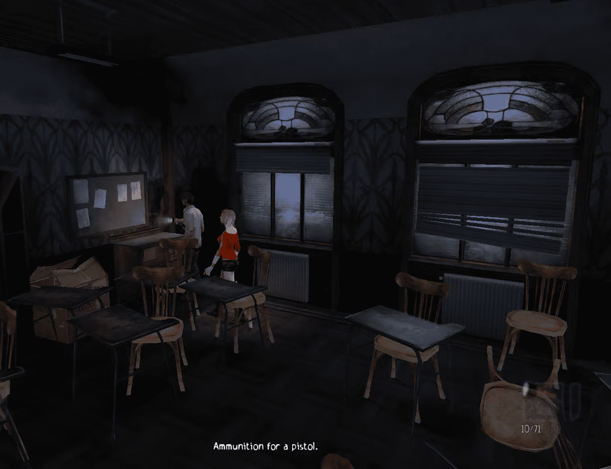
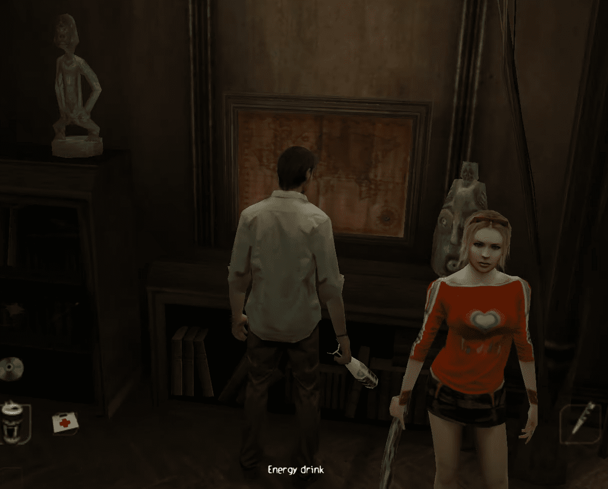

Obscure (2004)
Obscure es un videojuego de terror de supervivencia. Desde hace tiempo, el Instituto Leafmore ha sido escenario de inexplicables desapariciones. En este juego de terror de supervivencia, estás al mando de un grupo de cinco estudiantes americanos para intentar revelar los misteriosos sucesos ocurridos en esta escuela aparentemente normal. La noche será larga y sobrevivir a ella no será tarea fácil...